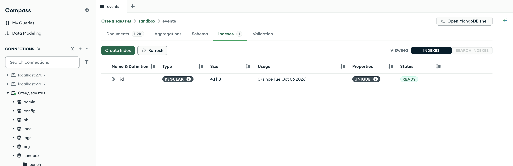
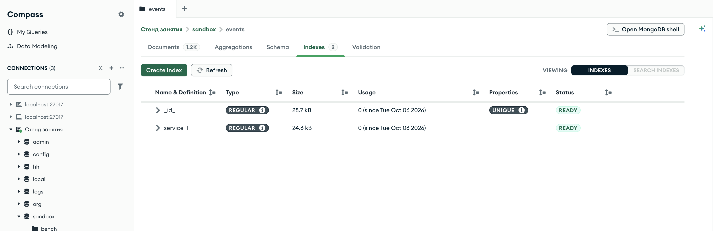
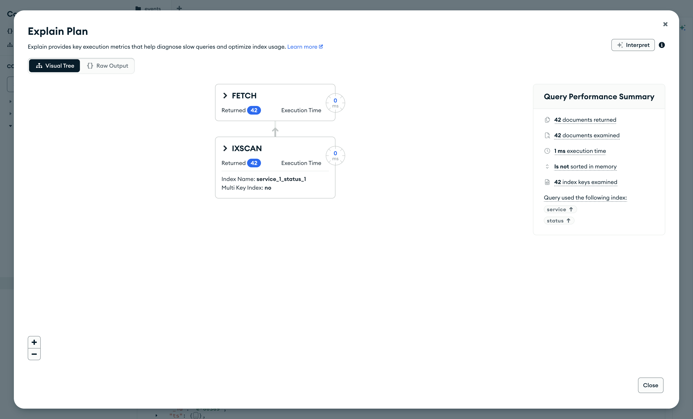
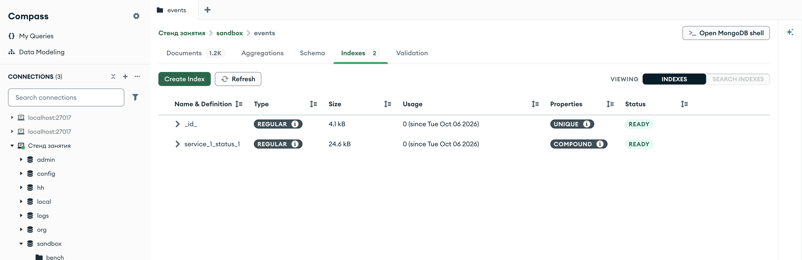
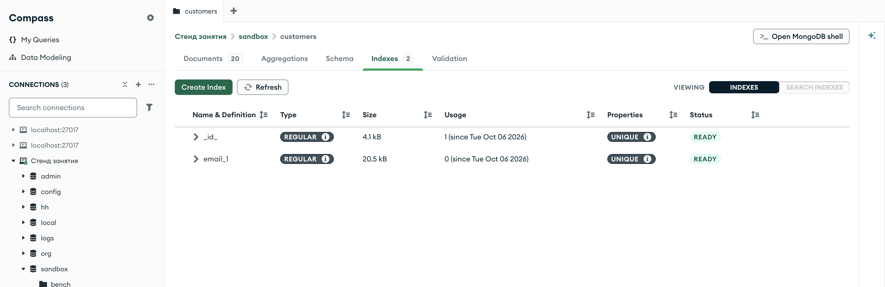
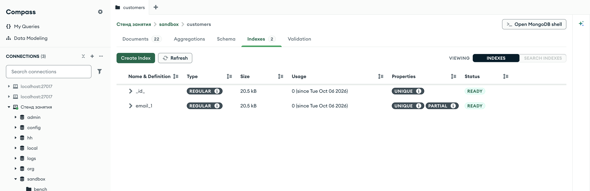

Справочник по MongoDB · модуль 3 · форма данных и скорость
3.2
Индексы: одиночные,
составные, уникальные
В этой главе разобрано, что такое индекс и как он меняет способ, которым сервер ищет документы. На копии журнала событий строятся индекс по одному полю и составной индекс по двум полям; по стадиям плана видно, когда сервер читает индекс, а когда — всю коллекцию. Отдельно разобраны уникальный индекс, который не пускает в коллекцию повторы, и частичный индекс для документов, в которых нужного поля нет.
- Категория
- Форма данных
- Уровень
- Начальный
- Связанные темы
- Фильтр и точечная нотация (глава 2.1), сортировка (глава 1.6),
$exists(глава 2.5), правила$jsonSchema(глава 3.1) - Зачем это знать
- Находить документы, не читая всю коллекцию, и запрещать повторы значений на уровне базы
Как запускать примеры этой главы
docker compose run --rm reset или скрипт из главы 1.0, §6.mongodb-glava-3.2-python.zip, 64 КБmongodb-glava-3.2-ruby.zip, 64 КБmongodb-glava-3.2-go.zip, 71 КБmongodb-glava-3.2-cpp.zip, 68 КБ — все примеры главы готовыми программами, базы и стенд в Docker. В README.md — запуск в Docker, если Compass нет или он не подключается, и на установленном сервере с Compass, а также что должна напечатать каждая программа.lessons/ch3_2.py — пример вставляется в конец файлаlessons/ch3_2.rb — пример вставляется в конец файлаlessons/ch3_2.go — пример внутрь скобок в конце main, функции и типы — выше mainlessons/ch3_2.cpp — пример внутрь скобок в конце main, функции — выше maincd lessons, затем python ch3_2.pycd lessons, затем python3 ch3_2.py · в Docker: docker compose run --rm python lessons/ch3_2.pycd lessons, затем ruby ch3_2.rb · в Docker: docker compose run --rm ruby lessons/ch3_2.rbcd lessons, затем go run ch3_2.go · в Docker: docker compose run --rm go lessons/ch3_2.gocd lessons, затем g++ -std=c++17 ch3_2.cpp -o prog $(pkg-config --cflags --libs libmongocxx1) && ./prog · в Docker: docker compose run --rm cpp lessons/ch3_2.cpp§1Как сервер ищет без индекса
Запрос {"service": "payments"} к журналу событий находит 232 документа из 1200. Чтобы их найти, сервер читает все 1200 документов по порядку и проверяет у каждого поле service. Такой способ называется просмотром коллекции (collection scan, в плане запроса — стадия COLLSCAN). На 1200 документах он занимает доли миллисекунды, на десяти миллионах — секунды, и время растёт вместе с коллекцией.
Индекс — отдельная структура, в которой значения одного или нескольких полей коллекции хранятся упорядоченно, и при каждом значении записана ссылка на документ. Так устроен предметный указатель в конце книги: слова по алфавиту, при каждом — номера страниц. Чтобы найти события payments, сервер находит это значение в упорядоченном списке и сразу получает ссылки на 232 документа, остальные 968 не читаются.
Один индекс у каждой коллекции есть всегда — по полю _id, его создаёт сервер вместе с коллекцией. Поэтому поиск по _id быстрый с самого начала, а по остальным полям — только после того, как для них создан индекс.
Индексы главы строятся на копии журнала в песочнице: база logs остаётся без новых индексов, и примеры других глав работают с ней в исходном виде. Коллекция journal (sandbox.events) открыта в заготовке главы. Пример удаляет её — вместе с коллекцией удаляются и все её индексы, — копирует в неё события из logs.events и выводит список индексов.
journal.drop() journal.insert_many(events.find()) print("событий в копии:", journal.count_documents({})) for ix in journal.list_indexes(): print("индекс", ix["name"], dict(ix["key"]))
journal.drop(); std::vector<bsoncxx::document::value> all; for (auto&& doc : events.find(make_document())) all.emplace_back(doc); journal.insert_many(all); std::cout << "событий в копии: " << journal.count_documents(make_document()) << std::endl; for (auto&& ix : journal.list_indexes()) { std::cout << "индекс " << ix["name"].get_string().value << " " << bsoncxx::to_json(ix["key"].get_document().value, bsoncxx::ExtendedJsonMode::k_relaxed) << std::endl; }
journal.Drop(ctx) var all []bson.D cursor, _ := events.Find(ctx, bson.D{}) cursor.All(ctx, &all) docs := make([]any, len(all)) for i := range all { docs[i] = all[i] } journal.InsertMany(ctx, docs) n, _ := journal.CountDocuments(ctx, bson.D{}) fmt.Println("событий в копии:", n) list, _ := journal.Indexes().List(ctx) for list.Next(ctx) { key, _ := bson.MarshalExtJSON(list.Current.Lookup("key").Document(), false, false) fmt.Println("индекс", list.Current.Lookup("name").StringValue(), string(key)) }
journal.drop journal.insert_many(events.find.to_a) puts "событий в копии: " + journal.count_documents({}).to_s journal.indexes.each { |ix| puts "индекс " + ix["name"] + " " + ix["key"].to_s }
событий в копии: 1200
индекс _id_ {'_id': 1}
событий в копии: 1200
индекс _id_ { "_id" : 1 }
событий в копии: 1200
индекс _id_ {"_id":1}
событий в копии: 1200
индекс _id_ {"_id"=>1}
В копии 1200 событий и один индекс — _id_. Имя индекса сервер составляет из имени поля и направления через подчёркивание; у индекса _id имя особое, с подчёркиванием на конце. Ключ индекса {"_id": 1} — поле и направление: 1 — по возрастанию, -1 — по убыванию.

sandbox.events, вкладка Indexes после копированияИндексы коллекции показывает вкладка Indexes, её счётчик — 1. В таблице одна строка, _id_. Столбцы: Name & Definition — имя, стрелка раскрывает ключ; Type — вид индекса, REGULAR — обычный; Size — место на диске; Usage — сколько раз индекс использовался в запросах с указанной даты; Properties — свойства: индекс по _id всегда UNIQUE, двух документов с одним _id быть не может; Status — READY, индекс построен.
§2Индекс по одному полю
Использует ли сервер индекс, видно по плану запроса — описанию шагов, которыми сервер выполняет запрос. План возвращает метод explain; подробно он разобран в главе 3.3. В этой главе из плана берутся только названия стадий, и делает это функция plan из заготовки главы. Она возвращает стадии сверху вниз: верхняя стадия отдаёт документы программе, нижняя — первой получает их из коллекции или индекса.
def plan(coll, filtr, sort=None): """Стадии плана, который выбрал сервер, сверху вниз: FETCH → IXSCAN service_1.""" cursor = coll.find(filtr) if sort: cursor = cursor.sort(sort) stage = cursor.explain()["queryPlanner"]["winningPlan"] stage = stage.get("queryPlan", stage) # MongoDB 7 кладёт план во вложенное поле steps = [] while stage: steps.append(stage["stage"] + (" " + stage["indexName"] if "indexName" in stage else "")) stage = stage.get("inputStage") return " → ".join(steps)
// plan — стадии плана, который выбрал сервер, сверху вниз: FETCH → IXSCAN service_1. std::string plan(mongocxx::database& db, const std::string& coll, bsoncxx::document::view filtr, bsoncxx::document::view sort = bsoncxx::document::view{}) { bsoncxx::builder::basic::document cmd; cmd.append(kvp("find", coll), kvp("filter", filtr)); if (!sort.empty()) cmd.append(kvp("sort", sort)); auto res = db.run_command(make_document(kvp("explain", cmd.view()))); auto stage = res.view()["queryPlanner"]["winningPlan"].get_document().value; if (stage["queryPlan"]) stage = stage["queryPlan"].get_document().value; // MongoDB 7 кладёт план во вложенное поле std::string steps; while (true) { steps += std::string{stage["stage"].get_string().value}; if (stage["indexName"]) steps += " " + std::string{stage["indexName"].get_string().value}; if (!stage["inputStage"]) break; steps += " → "; stage = stage["inputStage"].get_document().value; } return steps; }
// plan — стадии плана, который выбрал сервер, сверху вниз: FETCH → IXSCAN service_1. func plan(coll *mongo.Collection, filtr bson.D, sort bson.D) string { cmd := bson.D{{Key: "find", Value: coll.Name()}, {Key: "filter", Value: filtr}} if sort != nil { cmd = append(cmd, bson.E{Key: "sort", Value: sort}) } var res bson.Raw coll.Database().RunCommand(context.Background(), bson.D{{Key: "explain", Value: cmd}}).Decode(&res) stage := res.Lookup("queryPlanner", "winningPlan").Document() if inner, ok := stage.Lookup("queryPlan").DocumentOK(); ok { // MongoDB 7 кладёт план во вложенное поле stage = inner } steps := []string{} for { step := stage.Lookup("stage").StringValue() if name, ok := stage.Lookup("indexName").StringValueOK(); ok { step += " " + name } steps = append(steps, step) next, ok := stage.Lookup("inputStage").DocumentOK() if !ok { break } stage = next } return strings.Join(steps, " → ") }
# Стадии плана, который выбрал сервер, сверху вниз: FETCH → IXSCAN service_1. def plan(coll, filtr, sort = nil) view = coll.find(filtr) view = view.sort(sort) if sort stage = view.explain["queryPlanner"]["winningPlan"] stage = stage["queryPlan"] || stage # MongoDB 7 кладёт план во вложенное поле steps = [] while stage steps << stage["stage"] + (stage["indexName"] ? " " + stage["indexName"] : "") stage = stage["inputStage"] end steps.join(" → ") end
Стадии, которые встретятся в главе:
COLLSCAN— просмотр всей коллекции;IXSCAN service_1— чтение индекса с указанным именем: сервер находит в нём нужные значения и получает ссылки на документы;FETCH— чтение документов по ссылкам, которые дала стадия ниже;SORT— сортировка документов в памяти сервера после того, как они прочитаны.
Пример выводит план запроса {"service": "payments"}, создаёт индекс по полю service и выводит план того же запроса ещё раз.
Индекс создаёт метод коллекции create_index. Одно поле можно передать строкой, направление тогда — по возрастанию. Метод возвращает имя созданного индекса.
Индексами коллекции управляет объект indexes; метод create_one создаёт индекс по документу ключа { "service" => 1 }. Он возвращает ответ сервера; имя индекса берётся методом indexes.get по тому же ключу.
Индексами коллекции управляет Indexes(); метод CreateOne принимает mongo.IndexModel, где в поле Keys записан ключ индекса, и возвращает имя созданного индекса.
Метод коллекции create_index принимает документ ключа и возвращает документ ответа, в котором имя индекса лежит в поле name.
print("до индекса: ", plan(journal, {"service": "payments"})) name = journal.create_index("service") print("создан индекс:", name) print("после индекса:", plan(journal, {"service": "payments"})) print("событий payments:", journal.count_documents({"service": "payments"}))
std::cout << "до индекса: " << plan(sandbox, "events", make_document(kvp("service", "payments"))) << std::endl; auto created = journal.create_index(make_document(kvp("service", 1))); std::cout << "создан индекс: " << created.view()["name"].get_string().value << std::endl; std::cout << "после индекса: " << plan(sandbox, "events", make_document(kvp("service", "payments"))) << std::endl; std::cout << "событий payments: " << journal.count_documents(make_document(kvp("service", "payments"))) << std::endl;
fmt.Println("до индекса: ", plan(journal, bson.D{{Key: "service", Value: "payments"}}, nil)) name, _ := journal.Indexes().CreateOne(ctx, mongo.IndexModel{Keys: bson.D{{Key: "service", Value: 1}}}) fmt.Println("создан индекс:", name) fmt.Println("после индекса:", plan(journal, bson.D{{Key: "service", Value: "payments"}}, nil)) n, _ := journal.CountDocuments(ctx, bson.D{{Key: "service", Value: "payments"}}) fmt.Println("событий payments:", n)
puts "до индекса: " + plan(journal, { "service" => "payments" }) journal.indexes.create_one({ "service" => 1 }) puts "создан индекс: " + journal.indexes.get({ "service" => 1 })["name"] puts "после индекса: " + plan(journal, { "service" => "payments" }) puts "событий payments: " + journal.count_documents({ "service" => "payments" }).to_s
до индекса: COLLSCAN создан индекс: service_1 после индекса: FETCH → IXSCAN service_1 событий payments: 232
до индекса: COLLSCAN создан индекс: service_1 после индекса: FETCH → IXSCAN service_1 событий payments: 232
до индекса: COLLSCAN создан индекс: service_1 после индекса: FETCH → IXSCAN service_1 событий payments: 232
до индекса: COLLSCAN создан индекс: service_1 после индекса: FETCH → IXSCAN service_1 событий payments: 232
До индекса план состоял из одной стадии COLLSCAN. Индекс получил имя service_1. После этого план того же запроса — две стадии: IXSCAN service_1 находит в индексе значение payments и передаёт ссылки на 232 документа, FETCH читает эти документы. Найдено столько же документов, сколько без индекса: индекс меняет способ поиска, результат запроса остаётся прежним.

sandbox.events после create_indexСчётчик вкладки — 2, вторая строка — service_1, тип REGULAR, свойств у него нет: индекс не уникальный и не составной.
§3Составной индекс и порядок полей
Дежурный ищет ошибки сервера в платёжном сервисе: {"service": "payments", "status": {"$gte": 500}}. Индекс по service отбирает 232 события, и у каждого сервер проверяет статус. Составной индекс хранит значения нескольких полей сразу и упорядочен сначала по первому полю, а внутри одинаковых значений первого — по второму. В индексе по service и status записи идут так:
Все события payments со статусом от 500 стоят в индексе подряд, и сервер читает ровно 42 записи. События со статусом 503 есть у всех пяти сервисов, и в этом индексе они разбросаны по пяти местам: по второму полю без первого записи не упорядочены. Поэтому составной индекс помогает запросам по первому полю, по первому и второму вместе, но не по второму полю отдельно. Первые поля составного индекса называются его префиксом: индекс по service и status работает для запроса, условия которого начинаются с префикса.
Составной индекс задаётся списком пар «поле, направление». Порядок пар в списке и есть порядок полей в индексе.
Составной индекс задаётся хешем из нескольких полей. Хеш Ruby сохраняет порядок ключей, и порядок полей в нём — порядок полей в индексе.
Составной индекс задаётся в Keys документом bson.D из нескольких полей. bson.D сохраняет порядок, и он становится порядком полей в индексе.
Составной индекс задаётся документом из нескольких полей; порядок полей в документе — порядок полей в индексе.
Пример создаёт индекс по service и status и выводит планы трёх запросов: по обоим полям, только по status и по service с сортировкой по status.
name = journal.create_index([("service", 1), ("status", 1)]) print("создан индекс:", name) print("service и status: ", plan(journal, {"service": "payments", "status": {"$gte": 500}})) print("только status: ", plan(journal, {"status": 503})) print("service, порядок по status:", plan(journal, {"service": "payments"}, [("status", 1)]))
auto created = journal.create_index(make_document(kvp("service", 1), kvp("status", 1))); std::cout << "создан индекс: " << created.view()["name"].get_string().value << std::endl; std::cout << "service и status: " << plan(sandbox, "events", make_document(kvp("service", "payments"), kvp("status", make_document(kvp("$gte", 500))))) << std::endl; std::cout << "только status: " << plan(sandbox, "events", make_document(kvp("status", 503))) << std::endl; std::cout << "service, порядок по status: " << plan(sandbox, "events", make_document(kvp("service", "payments")), make_document(kvp("status", 1))) << std::endl;
name, _ := journal.Indexes().CreateOne(ctx, mongo.IndexModel{ Keys: bson.D{{Key: "service", Value: 1}, {Key: "status", Value: 1}}}) fmt.Println("создан индекс:", name) fmt.Println("service и status: ", plan(journal, bson.D{{Key: "service", Value: "payments"}, {Key: "status", Value: bson.D{{Key: "$gte", Value: 500}}}}, nil)) fmt.Println("только status: ", plan(journal, bson.D{{Key: "status", Value: 503}}, nil)) fmt.Println("service, порядок по status:", plan(journal, bson.D{{Key: "service", Value: "payments"}}, bson.D{{Key: "status", Value: 1}}))
journal.indexes.create_one({ "service" => 1, "status" => 1 }) puts "создан индекс: " + journal.indexes.get({ "service" => 1, "status" => 1 })["name"] puts "service и status: " + plan(journal, { "service" => "payments", "status" => { "$gte" => 500 } }) puts "только status: " + plan(journal, { "status" => 503 }) puts "service, порядок по status: " + plan(journal, { "service" => "payments" }, { "status" => 1 })
создан индекс: service_1_status_1 service и status: FETCH → IXSCAN service_1_status_1 только status: COLLSCAN service, порядок по status: FETCH → IXSCAN service_1_status_1
создан индекс: service_1_status_1 service и status: FETCH → IXSCAN service_1_status_1 только status: COLLSCAN service, порядок по status: FETCH → IXSCAN service_1_status_1
создан индекс: service_1_status_1 service и status: FETCH → IXSCAN service_1_status_1 только status: COLLSCAN service, порядок по status: FETCH → IXSCAN service_1_status_1
создан индекс: service_1_status_1 service и status: FETCH → IXSCAN service_1_status_1 только status: COLLSCAN service, порядок по status: FETCH → IXSCAN service_1_status_1
Индекс получил имя service_1_status_1. Запрос по обоим полям сервер выполнил по нему. Запрос только по status снова выполнен просмотром коллекции: поле status не входит в префикс. В третьем запросе нет стадии SORT: внутри значения payments записи индекса уже упорядочены по статусу, и сервер отдаёт документы в порядке индекса без сортировки в памяти.
Сервер выбрал составной индекс для первого запроса, хотя индекс service_1 тоже подходил. Когда подходят несколько индексов, сервер пробует их на запросе и оставляет тот, по которому нужный результат получается за меньшее число шагов.

{ service: "payments", status: { $gte: 500 } }Кнопка Explain на вкладке Documents показывает план запроса из поля фильтра. В дереве те же две стадии, что вывела функция plan: снизу IXSCAN по индексу service_1_status_1, над ней FETCH, обе вернули 42 документа. Справа сводка: прочитано 42 ключа индекса и 42 документа — столько же, сколько найдено. Остальные числа сводки разобраны в главе 3.3.
§4Удаление индекса
После создания составного индекса индекс service_1 стал лишним: service — префикс индекса service_1_status_1, и запросы по одному service он тоже обслуживает. Лишний индекс занимает место и замедляет запись (§8), поэтому его удаляют. Индекс удаляется по имени.
Метод коллекции drop_index принимает имя индекса.
Метод indexes.drop_one принимает имя индекса.
Метод Indexes().DropOne принимает имя индекса.
Метод indexes().drop_one принимает имя индекса.
Пример удаляет service_1, выводит оставшиеся индексы и планы двух запросов: только по service и по service с сортировкой по времени события ts.
journal.drop_index("service_1") for ix in journal.list_indexes(): print("индекс", ix["name"], dict(ix["key"])) print("только service: ", plan(journal, {"service": "payments"})) print("service, порядок по ts:", plan(journal, {"service": "payments"}, [("ts", -1)]))
journal.indexes().drop_one("service_1"); for (auto&& ix : journal.list_indexes()) { std::cout << "индекс " << ix["name"].get_string().value << " " << bsoncxx::to_json(ix["key"].get_document().value, bsoncxx::ExtendedJsonMode::k_relaxed) << std::endl; } std::cout << "только service: " << plan(sandbox, "events", make_document(kvp("service", "payments"))) << std::endl; std::cout << "service, порядок по ts: " << plan(sandbox, "events", make_document(kvp("service", "payments")), make_document(kvp("ts", -1))) << std::endl;
journal.Indexes().DropOne(ctx, "service_1") list, _ := journal.Indexes().List(ctx) for list.Next(ctx) { key, _ := bson.MarshalExtJSON(list.Current.Lookup("key").Document(), false, false) fmt.Println("индекс", list.Current.Lookup("name").StringValue(), string(key)) } fmt.Println("только service: ", plan(journal, bson.D{{Key: "service", Value: "payments"}}, nil)) fmt.Println("service, порядок по ts:", plan(journal, bson.D{{Key: "service", Value: "payments"}}, bson.D{{Key: "ts", Value: -1}}))
journal.indexes.drop_one("service_1") journal.indexes.each { |ix| puts "индекс " + ix["name"] + " " + ix["key"].to_s } puts "только service: " + plan(journal, { "service" => "payments" }) puts "service, порядок по ts: " + plan(journal, { "service" => "payments" }, { "ts" => -1 })
индекс _id_ {'_id': 1}
индекс service_1_status_1 {'service': 1, 'status': 1}
только service: FETCH → IXSCAN service_1_status_1
service, порядок по ts: SORT → FETCH → IXSCAN service_1_status_1
индекс _id_ { "_id" : 1 }
индекс service_1_status_1 { "service" : 1, "status" : 1 }
только service: FETCH → IXSCAN service_1_status_1
service, порядок по ts: SORT → FETCH → IXSCAN service_1_status_1
индекс _id_ {"_id":1}
индекс service_1_status_1 {"service":1,"status":1}
только service: FETCH → IXSCAN service_1_status_1
service, порядок по ts: SORT → FETCH → IXSCAN service_1_status_1
индекс _id_ {"_id"=>1}
индекс service_1_status_1 {"service"=>1, "status"=>1}
только service: FETCH → IXSCAN service_1_status_1
service, порядок по ts: SORT → FETCH → IXSCAN service_1_status_1
Остались два индекса — _id_ и составной. Запрос по service выполнен по составному индексу: service — его префикс. Во втором запросе сверху появилась стадия SORT: поля ts в индексе нет, и сервер сортирует 232 документа в памяти после чтения. Если такой запрос выполняется часто, для него строят индекс, в котором после service идёт ts.
Порядок по убыванию индекс тоже даёт: для сортировки по status от больших к меньшим сервер читает тот же индекс service_1_status_1 с конца, и стадии SORT в плане нет. Удалить можно любой индекс, кроме _id_: на попытку сервер отвечает ошибкой cannot drop _id index.

sandbox.events после удаления service_1Осталось два индекса. У составного свойство COMPOUND — «составной». Размеры в столбце Size: 4,1 kB у _id_ и 24,6 kB у составного на 1200 событий.
§5Уникальный индекс
Индекс с параметром unique — уникальный — не допускает в коллекции двух документов с одинаковым значением индексированного поля. Сервер проверяет это при каждой вставке и каждом обновлении, как валидатор из главы 3.1, и отклоняет запись, которая создала бы повтор. Так защищают значения, которые должны встречаться один раз: почту покупателя, номер заказа, артикул.
Пример копирует покупателей из shop.customers в clients (sandbox.customers), создаёт уникальный индекс по полю email и пробует записать нового покупателя с почтой, которая уже есть у Анны Беловой.
Параметр передаётся в create_index именованным аргументом unique=True. Отказ из-за повтора PyMongo выбрасывает исключением DuplicateKeyError; повторившееся значение лежит в e.details["keyValue"].
Параметр передаётся в create_one вторым аргументом unique: true. Отказ приходит исключением Mongo::Error::OperationFailure; повторившееся значение лежит в ответе сервера, e.document["writeErrors"][0]["keyValue"].
Параметры индекса собираются в options.Index(), уникальность задаёт SetUnique(true). Отказ приходит ошибкой mongo.WriteException; повторившееся значение достаёт Raw.Lookup("keyValue") из первой ошибки записи.
Параметры индекса — объект mongocxx::options::index, уникальность задаёт unique(true). Отказ приходит исключением mongocxx::operation_exception; повторившееся значение лежит в ответе сервера, в первом элементе writeErrors.
from pymongo.errors import DuplicateKeyError clients.drop() clients.insert_many(db["customers"].find()) print("создан индекс:", clients.create_index("email", unique=True)) try: clients.insert_one({"_id": "c-101", "name": "Ольга Кравец", "email": "user01@example.com", "city": "Ярославль"}) print("Ольга Кравец записана") except DuplicateKeyError as e: print("Ольга Кравец отклонена, код", e.code, "— уже есть", e.details["keyValue"]) print("покупателей:", clients.count_documents({}))
clients.drop(); std::vector<bsoncxx::document::value> all; for (auto&& doc : db["customers"].find(make_document())) all.emplace_back(doc); clients.insert_many(all); mongocxx::options::index unique; unique.unique(true); auto created = clients.create_index(make_document(kvp("email", 1)), unique); std::cout << "создан индекс: " << created.view()["name"].get_string().value << std::endl; try { clients.insert_one(make_document(kvp("_id", "c-101"), kvp("name", "Ольга Кравец"), kvp("email", "user01@example.com"), kvp("city", "Ярославль"))); std::cout << "Ольга Кравец записана" << std::endl; } catch (const mongocxx::operation_exception& e) { std::cout << "Ольга Кравец отклонена, код " << e.code().value() << " — уже есть " << bsoncxx::to_json(e.raw_server_error()->view()["writeErrors"][0]["keyValue"].get_document().value, bsoncxx::ExtendedJsonMode::k_relaxed) << std::endl; } std::cout << "покупателей: " << clients.count_documents(make_document()) << std::endl;
clients.Drop(ctx) var all []bson.D cursor, _ := db.Collection("customers").Find(ctx, bson.D{}) cursor.All(ctx, &all) docs := make([]any, len(all)) for i := range all { docs[i] = all[i] } clients.InsertMany(ctx, docs) name, _ := clients.Indexes().CreateOne(ctx, mongo.IndexModel{ Keys: bson.D{{Key: "email", Value: 1}}, Options: options.Index().SetUnique(true)}) fmt.Println("создан индекс:", name) _, err := clients.InsertOne(ctx, bson.D{ {Key: "_id", Value: "c-101"}, {Key: "name", Value: "Ольга Кравец"}, {Key: "email", Value: "user01@example.com"}, {Key: "city", Value: "Ярославль"}}) var we mongo.WriteException if errors.As(err, &we) { fmt.Println("Ольга Кравец отклонена, код", we.WriteErrors[0].Code, "— уже есть", we.WriteErrors[0].Raw.Lookup("keyValue")) } else { fmt.Println("Ольга Кравец записана") } n, _ := clients.CountDocuments(ctx, bson.D{}) fmt.Println("покупателей:", n)
clients.drop clients.insert_many(db[:customers].find.to_a) clients.indexes.create_one({ "email" => 1 }, unique: true) puts "создан индекс: " + clients.indexes.get({ "email" => 1 })["name"] begin clients.insert_one({ "_id" => "c-101", "name" => "Ольга Кравец", "email" => "user01@example.com", "city" => "Ярославль" }) puts "Ольга Кравец записана" rescue Mongo::Error::OperationFailure => e puts "Ольга Кравец отклонена, код #{e.code} — уже есть #{e.document["writeErrors"][0]["keyValue"]}" end puts "покупателей: " + clients.count_documents({}).to_s
создан индекс: email_1
Ольга Кравец отклонена, код 11000 — уже есть {'email': 'user01@example.com'}
покупателей: 20
создан индекс: email_1
Ольга Кравец отклонена, код 11000 — уже есть { "email" : "user01@example.com" }
покупателей: 20
создан индекс: email_1
Ольга Кравец отклонена, код 11000 — уже есть {"email": "user01@example.com"}
покупателей: 20
создан индекс: email_1
Ольга Кравец отклонена, код 11000 — уже есть {"email"=>"user01@example.com"}
покупателей: 20
Индекс получил имя email_1. Вставка отклонена с кодом 11000 — DuplicateKey, «повтор ключа»; keyValue называет значение, которое уже есть в индексе. Покупателей по-прежнему 20: отклонённый документ не записан.

sandbox.customers, уникальный индекс по почтеУ индекса email_1 свойство UNIQUE, как у _id_: оба не допускают повторов. Документов на вкладке Documents — 20.
§6Уникальный индекс на данных с повторами
Уникальный индекс можно создать только на коллекции, где повторов уже нет. Пока индекс строится, сервер проходит по всем документам, и первый же повтор останавливает постройку. Пример пробует создать уникальный индекс по городу.
from pymongo.errors import OperationFailure print("городов:", len(clients.distinct("city")), "на", clients.count_documents({}), "покупателей") try: clients.create_index("city", unique=True) print("индекс по city создан") except OperationFailure as e: print("индекс по city не создан, код", e.code) print("индексы:", [ix["name"] for ix in clients.list_indexes()])
auto cities = clients.distinct("city", make_document()); auto values = (*cities.begin())["values"].get_array().value; std::cout << "городов: " << std::distance(values.begin(), values.end()) << " на " << clients.count_documents(make_document()) << " покупателей" << std::endl; mongocxx::options::index unique; unique.unique(true); try { clients.create_index(make_document(kvp("city", 1)), unique); std::cout << "индекс по city создан" << std::endl; } catch (const mongocxx::operation_exception& e) { std::cout << "индекс по city не создан, код " << e.code().value() << std::endl; } std::cout << "индексы:"; for (auto&& ix : clients.list_indexes()) std::cout << " " << ix["name"].get_string().value; std::cout << std::endl;
cities, _ := clients.Distinct(ctx, "city", bson.D{}).Raw() values, _ := cities.Values() n, _ := clients.CountDocuments(ctx, bson.D{}) fmt.Println("городов:", len(values), "на", n, "покупателей") _, err := clients.Indexes().CreateOne(ctx, mongo.IndexModel{ Keys: bson.D{{Key: "city", Value: 1}}, Options: options.Index().SetUnique(true)}) var ce mongo.CommandError if errors.As(err, &ce) { fmt.Println("индекс по city не создан, код", ce.Code) } else { fmt.Println("индекс по city создан") } names := []string{} list, _ := clients.Indexes().List(ctx) for list.Next(ctx) { names = append(names, list.Current.Lookup("name").StringValue()) } fmt.Println("индексы:", names)
puts "городов: #{clients.distinct("city").size} на #{clients.count_documents({})} покупателей" begin clients.indexes.create_one({ "city" => 1 }, unique: true) puts "индекс по city создан" rescue Mongo::Error::OperationFailure => e puts "индекс по city не создан, код #{e.code}" end puts "индексы: " + clients.indexes.map { |ix| ix["name"] }.to_s
городов: 5 на 20 покупателей индекс по city не создан, код 11000 индексы: ['_id_', 'email_1']
городов: 5 на 20 покупателей индекс по city не создан, код 11000 индексы: _id_ email_1
городов: 5 на 20 покупателей индекс по city не создан, код 11000 индексы: [_id_ email_1]
городов: 5 на 20 покупателей индекс по city не создан, код 11000 индексы: ["_id_", "email_1"]
Городов пять на 20 покупателей, значит, города повторяются. Индекс не создан, ошибка — тот же код 11000, что при вставке повтора. В списке индексов коллекции его нет. Перед созданием уникального индекса на коллекции с данными повторы ищут и устраняют, иначе индекс не появится.
В PyMongo отказ при постройке приходит тем же исключением DuplicateKeyError; пример ловит его через общий класс OperationFailure, от которого наследуются все ошибки сервера.
Отказ при постройке приходит ошибкой команды mongo.CommandError; код лежит в её поле Code.
§7Документ без поля и частичный индекс
У документа, в котором нет индексированного поля, в индекс попадает значение null. Для уникального индекса это значит, что без почты может быть только один покупатель: второй даст повтор null. Пример добавляет двух покупателей без почты.
Если документы без поля допустимы, индекс делают частичным: параметр partialFilterExpression задаёт условие, и в индекс попадают только документы, которые ему соответствуют. Условие {"email": {"$exists": true}} оставляет в индексе документы с почтой, и уникальность проверяется только среди них. Параметры существующего индекса не меняются, поэтому пример удаляет email_1 и создаёт индекс заново.
Параметр передаётся в create_index именованным аргументом partialFilterExpression, значение — документ условия.
Параметр передаётся в create_one как partial_filter_expression:, значение — документ условия.
Условие задаёт SetPartialFilterExpression в той же цепочке options.Index(), что и SetUnique.
Условие задаёт partial_filter_expression объекта параметров. Объект хранит ссылку на документ условия, поэтому документ лежит в отдельной переменной has_email и живёт до создания индекса.
from pymongo.errors import DuplicateKeyError clients.insert_one({"_id": "c-102", "name": "Андрей Носов", "city": "Казань"}) try: clients.insert_one({"_id": "c-103", "name": "Вера Лосева", "city": "Казань"}) print("второй покупатель без почты записан") except DuplicateKeyError as e: print("второй покупатель без почты отклонён — уже есть", e.details["keyValue"]) clients.drop_index("email_1") clients.create_index("email", unique=True, partialFilterExpression={"email": {"$exists": True}}) clients.insert_one({"_id": "c-103", "name": "Вера Лосева", "city": "Казань"}) print("покупателей без почты:", clients.count_documents({"email": {"$exists": False}})) try: clients.insert_one({"_id": "c-104", "name": "Ольга Кравец", "email": "user01@example.com"}) except DuplicateKeyError as e: print("повтор почты отклонён — уже есть", e.details["keyValue"])
auto key_value = [](const mongocxx::operation_exception& e) { return bsoncxx::to_json(e.raw_server_error()->view()["writeErrors"][0]["keyValue"].get_document().value, bsoncxx::ExtendedJsonMode::k_relaxed); }; clients.insert_one(make_document(kvp("_id", "c-102"), kvp("name", "Андрей Носов"), kvp("city", "Казань"))); try { clients.insert_one(make_document(kvp("_id", "c-103"), kvp("name", "Вера Лосева"), kvp("city", "Казань"))); std::cout << "второй покупатель без почты записан" << std::endl; } catch (const mongocxx::operation_exception& e) { std::cout << "второй покупатель без почты отклонён — уже есть " << key_value(e) << std::endl; } clients.indexes().drop_one("email_1"); auto has_email = make_document(kvp("email", make_document(kvp("$exists", true)))); mongocxx::options::index partial; partial.unique(true); partial.partial_filter_expression(has_email.view()); clients.create_index(make_document(kvp("email", 1)), partial); clients.insert_one(make_document(kvp("_id", "c-103"), kvp("name", "Вера Лосева"), kvp("city", "Казань"))); std::cout << "покупателей без почты: " << clients.count_documents(make_document(kvp("email", make_document(kvp("$exists", false))))) << std::endl; try { clients.insert_one(make_document(kvp("_id", "c-104"), kvp("name", "Ольга Кравец"), kvp("email", "user01@example.com"))); } catch (const mongocxx::operation_exception& e) { std::cout << "повтор почты отклонён — уже есть " << key_value(e) << std::endl; }
clients.InsertOne(ctx, bson.D{{Key: "_id", Value: "c-102"}, {Key: "name", Value: "Андрей Носов"}, {Key: "city", Value: "Казань"}}) _, err := clients.InsertOne(ctx, bson.D{{Key: "_id", Value: "c-103"}, {Key: "name", Value: "Вера Лосева"}, {Key: "city", Value: "Казань"}}) var we mongo.WriteException if errors.As(err, &we) { fmt.Println("второй покупатель без почты отклонён — уже есть", we.WriteErrors[0].Raw.Lookup("keyValue")) } else { fmt.Println("второй покупатель без почты записан") } clients.Indexes().DropOne(ctx, "email_1") clients.Indexes().CreateOne(ctx, mongo.IndexModel{ Keys: bson.D{{Key: "email", Value: 1}}, Options: options.Index().SetUnique(true). SetPartialFilterExpression(bson.D{{Key: "email", Value: bson.D{{Key: "$exists", Value: true}}}})}) clients.InsertOne(ctx, bson.D{{Key: "_id", Value: "c-103"}, {Key: "name", Value: "Вера Лосева"}, {Key: "city", Value: "Казань"}}) n, _ := clients.CountDocuments(ctx, bson.D{{Key: "email", Value: bson.D{{Key: "$exists", Value: false}}}}) fmt.Println("покупателей без почты:", n) _, err = clients.InsertOne(ctx, bson.D{{Key: "_id", Value: "c-104"}, {Key: "name", Value: "Ольга Кравец"}, {Key: "email", Value: "user01@example.com"}}) if errors.As(err, &we) { fmt.Println("повтор почты отклонён — уже есть", we.WriteErrors[0].Raw.Lookup("keyValue")) }
clients.insert_one({ "_id" => "c-102", "name" => "Андрей Носов", "city" => "Казань" }) begin clients.insert_one({ "_id" => "c-103", "name" => "Вера Лосева", "city" => "Казань" }) puts "второй покупатель без почты записан" rescue Mongo::Error::OperationFailure => e puts "второй покупатель без почты отклонён — уже есть #{e.document["writeErrors"][0]["keyValue"]}" end clients.indexes.drop_one("email_1") clients.indexes.create_one({ "email" => 1 }, unique: true, partial_filter_expression: { "email" => { "$exists" => true } }) clients.insert_one({ "_id" => "c-103", "name" => "Вера Лосева", "city" => "Казань" }) puts "покупателей без почты: " + clients.count_documents({ "email" => { "$exists" => false } }).to_s begin clients.insert_one({ "_id" => "c-104", "name" => "Ольга Кравец", "email" => "user01@example.com" }) rescue Mongo::Error::OperationFailure => e puts "повтор почты отклонён — уже есть #{e.document["writeErrors"][0]["keyValue"]}" end
второй покупатель без почты отклонён — уже есть {'email': None}
покупателей без почты: 2
повтор почты отклонён — уже есть {'email': 'user01@example.com'}
второй покупатель без почты отклонён — уже есть { "email" : null }
покупателей без почты: 2
повтор почты отклонён — уже есть { "email" : "user01@example.com" }
второй покупатель без почты отклонён — уже есть {"email": null}
покупателей без почты: 2
повтор почты отклонён — уже есть {"email": "user01@example.com"}
второй покупатель без почты отклонён — уже есть {"email"=>nil}
покупателей без почты: 2
повтор почты отклонён — уже есть {"email"=>"user01@example.com"}
Первый покупатель без почты записан, второй отклонён: keyValue — почта со значением null. После замены индекса частичным второй покупатель записан, без почты теперь двое. Повтор настоящей почты частичный индекс по-прежнему отклоняет.

sandbox.customers после замены индекса частичнымУ нового email_1 два свойства: UNIQUE и PARTIAL — «частичный». Значок i рядом со свойством показывает условие индекса. Документов 22: к двадцати покупателям добавились двое без почты.
§8Какие поля индексировать
Индекс ускоряет чтение, но у него есть цена. При каждой вставке, обновлении и удалении сервер меняет не только документ, но и каждый индекс коллекции. Индекс занимает место: на копии журнала из 1200 событий составной индекс занимает 24,6 kB (кадр в §4), и размер растёт вместе с коллекцией. У одной коллекции может быть не больше 64 индексов.
Поэтому индексы строят под запросы, которые выполняются часто: поиск дежурного по сервису и статусу, вход покупателя по почте. Поле, по которому почти не ищут, индексировать не нужно. Поле с немногими значениями, например level с тремя значениями на 1200 событий, отбирает по индексу сотни документов, и выигрыш от такого индекса меньше, чем от индекса по более разнообразному полю.
Индексировать можно и вложенные поля, и поля массивов. Ключ записывается точечной нотацией, как в фильтре (глава 2.1): {"delivery.city": 1} — индекс по городу доставки заказа. Если поле — массив или лежит внутри массива, как items.sku, сервер заносит в индекс каждый элемент отдельно; такой индекс называется многоключевым (multikey) и находит заказ по любому из его артикулов.
§9Индексы в Compass
Кадры в разделах выше сняты на тех же коллекциях, что и примеры. Индексы коллекции в Compass находятся на вкладке Indexes; таблица индексов разобрана в §1.
Кнопка Create Index открывает окно создания индекса.
В строке Index fields выбирается поле и тип: 1 или -1 — направление, как в коде. Кнопка + справа добавляет строку для следующего поля составного индекса. В разделе Options — параметры: Create unique index делает индекс уникальным, Index name задаёт своё имя вместо составленного сервером, Partial Filter Expression — условие частичного индекса. Остальные параметры окна в этой главе не используются. Кнопка Create Index внизу станет активной, когда выбрано хотя бы одно поле с типом.
Удаляется индекс из строки таблицы: при наведении курсора в конце строки появляются кнопки Hide Index (скрыть индекс от планировщика запросов, не удаляя) и Drop Index (удалить).
Использует ли запрос индекс, Compass показывает кнопкой Explain на вкладке Documents (кадр в §3): для запроса из поля фильтра строится тот же план, что возвращает метод explain, в виде дерева стадий.
§10Частые ошибки
| Что написано | Что происходит | Как правильно |
|---|---|---|
Индекс по status и service для запроса только по service | План — COLLSCAN: service не первое поле индекса | Первым в индексе ставить поле, которое есть во всех запросах: service, затем status |
Индексы по service и по service + status одновременно | Первый лишний: запросы по service обслуживает префикс составного, а запись обновляет оба | Удалить service_1 |
| Сортировка по полю, которого нет в индексе запроса | В плане стадия SORT: документы сортируются в памяти после чтения | Добавить поле сортировки в индекс после полей условия |
| Уникальный индекс на коллекции, где значения уже повторяются | Индекс не создаётся: ошибка 11000 при постройке | Найти и устранить повторы, затем создать индекс |
| Уникальный индекс по полю, которого нет в части документов | Второй документ без поля отклонён: в индексе уже есть null | Частичный индекс с partialFilterExpression: {"email": {"$exists": true}} |
Тот же ключ индекса с другими параметрами, например с unique | Ошибка IndexKeySpecsConflict (код 86): параметры существующего индекса не меняются | Удалить индекс и создать заново с новыми параметрами |
Удаление индекса _id_ | Ошибка cannot drop _id index | Индекс по _id есть у каждой коллекции, удалить его нельзя |
| Что написано | Что происходит | Как правильно |
|---|---|---|
Индекс по status и service для запроса только по service | План — COLLSCAN: service не первое поле индекса | Первым в индексе ставить поле, которое есть во всех запросах: service, затем status |
Индексы по service и по service + status одновременно | Первый лишний: запросы по service обслуживает префикс составного, а запись обновляет оба | Удалить service_1 |
| Сортировка по полю, которого нет в индексе запроса | В плане стадия SORT: документы сортируются в памяти после чтения | Добавить поле сортировки в индекс после полей условия |
| Уникальный индекс на коллекции, где значения уже повторяются | Индекс не создаётся: ошибка 11000 при постройке | Найти и устранить повторы, затем создать индекс |
| Уникальный индекс по полю, которого нет в части документов | Второй документ без поля отклонён: в индексе уже есть null | Частичный индекс с partialFilterExpression: {"email": {"$exists": true}} |
Тот же ключ индекса с другими параметрами, например с unique | Ошибка IndexKeySpecsConflict (код 86): параметры существующего индекса не меняются | Удалить индекс и создать заново с новыми параметрами |
Удаление индекса _id_ | Ошибка cannot drop _id index | Индекс по _id есть у каждой коллекции, удалить его нельзя |
| Что написано | Что происходит | Как правильно |
|---|---|---|
Индекс по status и service для запроса только по service | План — COLLSCAN: service не первое поле индекса | Первым в индексе ставить поле, которое есть во всех запросах: service, затем status |
Индексы по service и по service + status одновременно | Первый лишний: запросы по service обслуживает префикс составного, а запись обновляет оба | Удалить service_1 |
| Сортировка по полю, которого нет в индексе запроса | В плане стадия SORT: документы сортируются в памяти после чтения | Добавить поле сортировки в индекс после полей условия |
| Уникальный индекс на коллекции, где значения уже повторяются | Индекс не создаётся: ошибка 11000 при постройке | Найти и устранить повторы, затем создать индекс |
| Уникальный индекс по полю, которого нет в части документов | Второй документ без поля отклонён: в индексе уже есть null | Частичный индекс с partialFilterExpression: {"email": {"$exists": true}} |
Тот же ключ индекса с другими параметрами, например с unique | Ошибка IndexKeySpecsConflict (код 86): параметры существующего индекса не меняются | Удалить индекс и создать заново с новыми параметрами |
Удаление индекса _id_ | Ошибка cannot drop _id index | Индекс по _id есть у каждой коллекции, удалить его нельзя |
| Что написано | Что происходит | Как правильно |
|---|---|---|
Индекс по status и service для запроса только по service | План — COLLSCAN: service не первое поле индекса | Первым в индексе ставить поле, которое есть во всех запросах: service, затем status |
Индексы по service и по service + status одновременно | Первый лишний: запросы по service обслуживает префикс составного, а запись обновляет оба | Удалить service_1 |
| Сортировка по полю, которого нет в индексе запроса | В плане стадия SORT: документы сортируются в памяти после чтения | Добавить поле сортировки в индекс после полей условия |
| Уникальный индекс на коллекции, где значения уже повторяются | Индекс не создаётся: ошибка 11000 при постройке | Найти и устранить повторы, затем создать индекс |
| Уникальный индекс по полю, которого нет в части документов | Второй документ без поля отклонён: в индексе уже есть null | Частичный индекс с partialFilterExpression: {"email": {"$exists": true}} |
Тот же ключ индекса с другими параметрами, например с unique | Ошибка IndexKeySpecsConflict (код 86): параметры существующего индекса не меняются | Удалить индекс и создать заново с новыми параметрами |
Удаление индекса _id_ | Ошибка cannot drop _id index | Индекс по _id есть у каждой коллекции, удалить его нельзя |
§11Проверьте себя
Чем план COLLSCAN отличается от FETCH → IXSCAN?
При COLLSCAN сервер читает все документы коллекции и проверяет условие у каждого. При IXSCAN он находит нужные значения в упорядоченном индексе и получает ссылки на подходящие документы, а FETCH читает только их.
Есть индекс по service и status. Каким из запросов он поможет: по service, по status, по обоим полям?
Запросу по service и запросу по обоим полям. service — префикс индекса; записи с одним значением status разбросаны по разным сервисам, и запрос только по status выполняется просмотром коллекции.
Когда в плане появляется стадия SORT?
Когда порядок, заданный сортировкой, не совпадает с порядком записей в индексе, по которому выполнен запрос, — например, при сортировке по ts с индексом по service и status. Тогда сервер сортирует прочитанные документы в памяти.
Почему не создаётся уникальный индекс по city?
В коллекции уже есть покупатели с одинаковым городом. При постройке сервер проходит по всем документам и останавливается на первом повторе с ошибкой 11000.
Зачем уникальному индексу по email условие {"email": {"$exists": true}}?
Без условия документы без почты попадают в индекс со значением null, и второй такой документ даёт повтор. С условием они в индекс не попадают, и уникальность проверяется только среди документов с почтой.
§12Самостоятельная работа
Работа выполняется на языке, выбранном в шапке главы, в той же заготовке lessons/ch3_2. Нужна копия заказов магазина в песочнице: коллекция sandbox.orders_idx, в которую скопированы документы shop.orders (коллекция orders заготовки), — так же, как копия журнала в §1.
- Выполнить запрос без индексаПосчитать заказы, доставленные в Москву:
{"delivery.city": "Москва", "status": "доставлен"}, и вывести план этого запроса функциейplan. - Создать составной индексПо городу доставки и статусу, в этом порядке. Вывести имя индекса и план того же запроса.
- Проверить префиксВывести планы двух запросов: только по статусу
"доставлен"и только по городу"Москва". Объяснить, почему планы разные. - Создать уникальный индексПо номеру заказа
number. Затем попробовать записать заказ с номером"2026-0001"и вывести код ошибки иkeyValue.
Ответ для самопроверки
Заказов, доставленных в Москву, 12; план без индекса — COLLSCAN. Составной индекс получает имя delivery.city_1_status_1, после него план — FETCH → IXSCAN delivery.city_1_status_1. Запрос только по статусу выполняется просмотром коллекции (COLLSCAN), только по городу — по составному индексу: город — первое поле индекса, статус — второе. Уникальный индекс по номеру получает имя number_1 и создаётся без ошибок: номера заказов не повторяются. Заказ с номером 2026-0001 отклонён с кодом 11000, keyValue — номер "2026-0001".
§13Шпаргалка
coll.create_index("service")
coll.create_index([("service", 1), ("status", 1)])
coll.create_index("email", unique=True)
coll.create_index("email", unique=True,
partialFilterExpression={"email": {"$exists": True}})
coll.list_indexes()
coll.drop_index("service_1")
except DuplicateKeyError as e:
e.code, e.details["keyValue"]
coll.create_index(make_document(kvp("service", 1)));
coll.create_index(make_document(kvp("service", 1), kvp("status", 1)));
mongocxx::options::index o;
o.unique(true);
o.partial_filter_expression(has_email.view());
coll.list_indexes()
coll.indexes().drop_one("service_1");
catch (const mongocxx::operation_exception& e)
e.raw_server_error()->view()["writeErrors"][0]["keyValue"]
coll.Indexes().CreateOne(ctx, mongo.IndexModel{
Keys: bson.D{{Key: "service", Value: 1}}})
Keys: bson.D{{Key: "service", Value: 1},
{Key: "status", Value: 1}}
Options: options.Index().SetUnique(true)
options.Index().SetUnique(true).
SetPartialFilterExpression(bson.D{...})
coll.Indexes().List(ctx)
coll.Indexes().DropOne(ctx, "service_1")
errors.As(err, &we)
we.WriteErrors[0].Raw.Lookup("keyValue")
coll.indexes.create_one({ "service" => 1 })
coll.indexes.create_one({ "service" => 1, "status" => 1 })
coll.indexes.create_one({ "email" => 1 }, unique: true)
coll.indexes.create_one({ "email" => 1 }, unique: true,
partial_filter_expression: { "email" => { "$exists" => true } })
coll.indexes.each { |ix| ... }
coll.indexes.drop_one("service_1")
rescue Mongo::Error::OperationFailure => e
e.document["writeErrors"][0]["keyValue"]
Итог главы
Индекс хранит значения полей коллекции упорядоченно, со ссылками на документы, и позволяет серверу найти документы без просмотра всей коллекции: в плане запроса вместо COLLSCAN появляется IXSCAN с именем индекса и FETCH. Индекс по _id есть у каждой коллекции, остальные создаются явно и удаляются по имени. Составной индекс упорядочен по первому полю, затем по второму и помогает запросам, условия которых начинаются с его префикса; если сортировка совпадает с порядком индекса, стадии SORT в плане нет. Уникальный индекс отклоняет повтор значения с ошибкой 11000 и не создаётся на данных, где повторы уже есть; документ без поля попадает в индекс со значением null, и частичный индекс с условием partialFilterExpression исключает такие документы. Каждый индекс замедляет запись и занимает место, поэтому индексы строят под частые запросы.